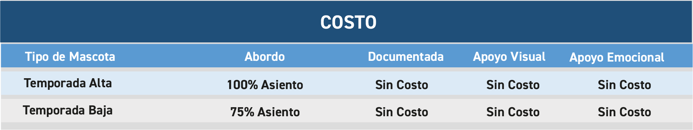
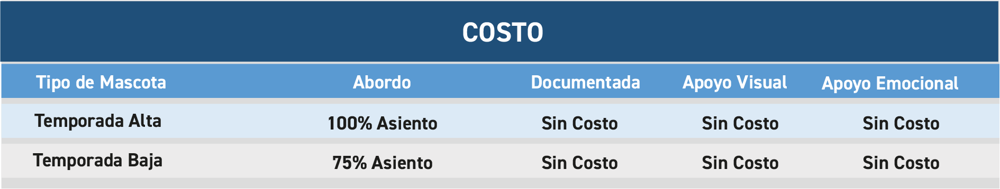

TÉRMINOS Y CONDICIONES
COMPRA DE BOLETOS
Puede comprar sus boletos hasta una hora antes de la salida deseada.
Si durante el proceso de compra usted tiene algún problema o duda, contamos con asistencia personalizada, en el Contact Center marcando al 800 8000 386 (opción 1 y 4) o a través del chat, donde con gusto le atenderemos.
Los boletos o pases de abordar son válidos únicamente para la fecha y hora especificada en los mismos, verifíquese al adquirirlo y consérvelo hasta el final de su recorrido ya que le da derecho al seguro de viaje y a 25 kilos de equipaje sin costo.
Sus boletos son válidos única y exclusivamente para la fecha y hora anotados en el mismo, verifíquese al adquirirlo.
Los viajes perdidos por no abordar el autobús en tiempo y forma no serán reembolsables; los reembolsos que procedan de acuerdo a la Ley serán realizados de la misma forma en que se haya efectuado el pago.
DOTERS
Estos términos y condiciones del Servicio regulan la relación entre ETN Turistar Lujo y las personas que usan sus servicios (“Personas Usuarias”).
Las Personas Usuarias aceptan estos Términos y Condiciones desde el momento en que se registran en el sitio y usan el servicio adquiriendo boletos de ETN Turistar.
Cuando debamos hacer cambios importantes en nuestros servicios, publicaremos las modificaciones con 10 días de anticipación para que las Personas Usuarias puedan revisarlas y seguir usando el Servicio. En ningún caso afectarán las operaciones que ya hayan finalizado.
Las Personas Usuarias que no tengan servicios pendientes con ETN Turistar o con otras Personas Usuarias, podrán finalizar su relación con ETN Turistar cancelando su cuenta.
FORMAS DE PAGO
Tarjetas Bancarias.
Se aceptan pagos con tarjetas bancarias (débito y crédito) respaldadas por Visa, Mastercard y American Express (aplican restricciones).
Pagos Electrónicos con PayPal (aplican restricciones, su uso está regido por las normativas que tanto PayPal como han establecido para su operación).
En pagos pagados por INTERNET NO HAY CANCELACIONES NI DEVOLUCIONES
PAGOS REFERENCIADOS OXXO
Esta referencia no es un comprobante de pago, por lo tanto, en ningún caso puede ser válida para viajar.
El pago de las reservaciones de viaje de operaciones sin de Tarifa Completa podrán efectuarse 24 hrs. antes de la salida del autobús.
Pasado los tiempos mencionados, sin excepción alguna la reservación será cancelada automáticamente por el sistema y el asiento será liberado para su venta.
Los pagos solo serán recibidos en los horarios de servicio de los establecimientos.
Solo se reciben pagos en efectivo y en una sola exhibición.
Una vez efectuado el pago correspondiente, el sistema enviará de forma automática al correo electrónico capturado en el registro previo, la confirmación del viaje con el pase de abordar.
El pago de la reservación de Pago Referenciado OXXO puede efectuarse en cualquiera de las sucursales de Oxxo presentando en cajas el comprobante impreso con el número de referencia para confirmar su boleto. Los pagos solo serán recibidos en los horarios de servicio del establecimiento.
TARIFA DE VIAJERO ANTICIPADO
- Viajero Anticipado aplica tanto para venta en línea (App ETN y sitio web), taquillas, puntos de venta propios ETN, centro de contacto telefónico y se puede realizar la compra con cualquier forma de pago.
- No aplica para canales o puntos de venta externos.
- En las rutas definidas para Viajero Anticipado no se podrán vender Boletos Abiertos, solo confirmados. Se podrán vender boletos abiertos pero con una tarifa a precio de adulto.
- Las tarifas de Viajero Anticipado no aplican ni son acumulables con otro tipo de descuentos o promociones.
- Al adquirir un boleto con tarifa de Viajero Anticipado en Web, App o Call Center se aplicará un descuento adicional del 5%. Descuento sujeto a disponibilidad.
- Las Tarifas de Viajero Anticipado son personales e intransferibles, para hacerla efectiva el cliente deberá presentar una identificación oficial antes de abordar el autobús, si no cumple con el requisito deberá pagar la Tarifa Completa.
- El periodo para comprar boletos de autobús y obtener la tarifa de Viajero Anticipado es a partir del primer minuto del día siguiente a la consulta y hasta dos meses posteriores, disponible en internet, taquillas y centro telefónico. En caso de NO contar con tarifa anticipada, aplica el descuento del 10% por compra en internet por viaje sencillo y 15% por viaje redondo comprando en línea o bien aplica el 10% por viaje redondo comprando en taquilla.
- La tarifa y los descuentos siempre estarán sujetos a disponibilidad.
- La promoción de 50% de descuento para pasajeros de Viva Aerobús, será únicamente sobre la tarifa adulto.
- La tarifa de Viajero Anticipado no aplica en la compra de boletos con beneficios de INAPAM, menores, estudiantes, maestros y boletos abiertos.
- Se reubicará sin costo a la próxima salida disponible al pasajero que haya perdido su viaje y llegue a la terminal dentro de los próximos 30 minutos a su hora de salida. Si llega después de los 30 minutos a su hora de salida o requiere salir después u otro día se cobrará 50% de la tarifa adulto.
Ver Rutas participantes: https://etn.com.mx/viajero-anticipado.html
TIEMPO MÍNIMO DE PRESENTACIÓN Y ABORDAJE
Al término de su compra deberá imprimir, descargar o guardar su pase de abordar en su dispositivo móvil; con él, tendrá que presentarse directamente en la sala de espera (donde aplique) o en el área de andenes, de preferencia media hora antes de su salida para documentar su equipaje y abordar el autobús sin necesidad de canje.
Además, deberá proporcionar al momento de abordar el autobús el número de operación y una identificación oficial vigente (sólo se aceptarán: credencial para votar, cédula profesional, licencia de manejo y/o pasaporte).
Las compras de boletos efectuadas a través del Contact Center, deberán en todo momento ser recogidos en taquillas por lo menos 30 minutos antes del abordaje del autobús con todos los requisitos necesarios, de lo contrario el pasajero no podrá hacer uso del servicio.
BOLETO ELECTRÓNICO E-TICKET
Durante el proceso de compra de su boleto en Taquillas, nuestros agentes de ventas le darán la opción de enviarle su boleto electrónico “E-TICKET” a su correo electrónico, el cual es un boleto que se podrá presentar directamente en el andén y le permitirán el abordaje a su unidad solo presentando su identificación oficial.
Este tipo de boleto se rige por todas las consideraciones mencionadas en este apartado de términos y condiciones
Este tipo de boleto NO aplica para boletos abiertos, ni para boletos comprados por Centro Telefónico, solo para viajes confirmados sencillos o redondos comprados por Taquilla y Puntos de Venta propios de ETN Turistar.
BOLETO ABIERTO
Usted podrá adquirir su boleto abierto en viaje sencillo, redondo o con enlace.
Este tipo de boleto cuenta con una vigencia de 6 meses a partir de la fecha de su compra y queda sujeto a disponibilidad de asientos y descuentos por autobús.
Los boletos abiertos que no hayan sido utilizados dentro del periodo de vigencia perderán toda validez y no podrán ser usados, cancelados o reembolsados.
No está permitida la venta de boletos abiertos a pasajeros con descuento de Estudiantes y Profesores.
Los boletos abiertos adquiridos por internet solo pueden ser pagados con tarjeta bancaria (débito o crédito) Visa, Mastercard, American Express, Pagos Electrónicos con PayPal y OXXO. (No aplican pagos en efectivo).
CONFIRMACIÓN DE BOLETO ABIERTO
Si su boleto abierto fue adquirido por internet deberá acceder a nuestro sitio web www.etn.com.mx y en la sección “Boleto Abierto” podrá realizar la confirmación de su viaje con el número de operación y nit hasta 90 minutos antes de la salida deseada.
La confirmación del boleto abierto, también la puede solicitar directamente en taquillas presentando su pase de abordar impreso preferentemente hasta una hora antes de la salida deseada o bien puede hacer su reservación previamente su reservación vía telefónica llamando al 800 8000 386 opción 1 del menú principal.
Las compras de boletos efectuadas a través del Contact Center, deberán en todo momento ser recogidos en taquillas por lo menos 30 minutos antes del abordaje del autobús con todos los requisitos necesarios, de lo contrario el pasajero no podrá hacer uso del servicio.
BOLETO ELECTRÓNICO E-TICKET
Durante el proceso de compra de su boleto en Taquillas, nuestros agentes de ventas le darán la opción de enviarle su boleto electrónico “E-TICKET” a su correo electrónico, el cual es un boleto que se podrá presentar directamente en el andén y le permitirán el abordaje a su unidad solo presentando su identificación oficial.
Este tipo de boleto se rige por todas las consideraciones mencionadas en este apartado de términos y condiciones
Este tipo de boleto NO aplica para boletos abiertos, ni para boletos comprados por Centro Telefónico, solo para viajes confirmados sencillos o redondos comprados por Taquilla y Puntos de Venta propios de ETN Turistar.
BOLETO ABIERTO
Usted podrá adquirir su boleto abierto en viaje sencillo, redondo o con enlace.
Este tipo de boleto cuenta con una vigencia de 6 meses a partir de la fecha de su compra y queda sujeto a disponibilidad de asientos y descuentos por autobús.
Los boletos abiertos que no hayan sido utilizados dentro del periodo de vigencia perderán toda validez y no podrán ser usados, cancelados o reembolsados.
No está permitida la venta de boletos abiertos a pasajeros con descuento de Estudiantes y Profesores.
Los boletos abiertos adquiridos por internet solo pueden ser pagados con tarjeta bancaria (débito o crédito) Visa, Mastercard, American Express, Pagos Electrónicos con PayPal y OXXO. (No aplican pagos en efectivo).
CONFIRMACIÓN DE BOLETO ABIERTO
Si su boleto abierto fue adquirido por internet deberá acceder a nuestro sitio web www.etn.com.mx y en la sección “Boleto Abierto” podrá realizar la confirmación de su viaje con el número de operación y nit hasta 90 minutos antes de la salida deseada.
La confirmación del boleto abierto, también la puede solicitar directamente en taquillas presentando su pase de abordar impreso preferentemente hasta una hora antes de la salida deseada o bien puede hacer su reservación previamente su reservación vía telefónica llamando al 800 8000 386 opción 1 del menú principal.
Todo boleto abierto deberá ser confirmado previamente de lo contrario, el pasajero no podrá abordar el autobús.
CAMBIOS Y CANCELACIONES (MODIFICACIÓN DE ITINERARIO)
En este tipo de compra (Internet) no hay cancelaciones de boletos.
Nuestro servicio de cambios, no tiene ningún costo adicional y solamente se podrán realizar máximo hasta dos cambios por boleto, incluyendo en el caso de la compra de boleto abierto la confirmación del mismo. El costo adicional solo aplica en caso de que para la fecha seleccionada, la tarifa sea mayor.
Cambios en Internet: Solo podrá cambiar fechas y horarios. Aplica para aquellas compras que hayan sido realizadas por este medio, si se desea modificar el viaje deberá acceder al sitio web www.etn.com.mx y en la sección “Modifique su Itinerario”, ingresar el número de operación y nit de su boleto. Solo podrá realizar cambio de fecha y hora. no está permitido la modificación de Origen, Destino, nombre o tipo de pasajero y solo lo podrá aplicar 90 min. después de su compra y hasta 90 minutos antes del horario de su salida.
En el caso de que requiera cambiar más de un boleto con un itinerario diferente, podrá ingresar tantos números de operación como desee separados por un espacio. Si el viaje incluye boletos de algún Menor, el cambio de itinerario deberá realizarse ingresando el número de operación del boleto del Menor junto con el de un Adulto, de lo contrario el sistema no permitirá la modificación si se realiza de manera independiente.
Cambios en la Taquilla: Los cambios de fecha, horario y/o ruta podrán realizarse en las taquillas o puntos de venta de ETN Turistar, siendo indispensable presentar el pase de abordar que le generó el portal o el “E-Ticket” que le fue enviado a su correo, así como una identificación oficial vigente (sólo se aceptarán: credencial para votar, cédula profesional, licencia de manejo y pasaporte) para solicitar el cambio correspondiente, debiéndose presentar con un tiempo mínimo de 90 minutos antes de la salida.
Intercambio de Boletos de Viajero Anticipado:
Para tarifas Viajero Anticipado no aplica cambio de nombre de pasajero.
El cambio de itinerario de viaje (fecha u hora) se puede realizar directamente desde la página de internet (www.etn.com.mx) en la sección “modifique su itinerario” o también podrán ser realizados en taquillas y/o puntos de venta ETN presentando el pase de abordar y una identificación oficial vigente. Cada operación está limitada a 2 cambios por internet y 1 en taquilla.
En caso de que la tarifa vigente al momento del cambio de corrida sea mayor a la tarifa pagada de Viajero Anticipado, el cliente deberá pagar la diferencia entre la tarifa pagada y tarifa vigente al momento del cambio de la corrida original, dicho pago deberá ser cubierto con la misma forma de pago realizada previamente. Aplica con todas las formas de pago.
En caso de que la tarifa vigente al momento del cambio de corrida sea menor a la tarifa pagada de Viajero Anticipado, no habrá devoluciones.
Asientos sujetos a disponibilidad, consúltalos en www.etn.com.mx, App ETN y taquillas.
Para dudas y comentarios, comunícate a nuestro centro de atención a clientes al 800 8000 386
TIPOS DE DESCUENTOS
En ETN Turistar se otorgan los siguientes descuentos (sujetos a disponibilidad):
- 3 Menores 50% (Todo el año).
- 3 INAPAM 50% (Todo el año).
- 3 Estudiantes 50% (Solo temporada vacacional).
- 2 Profesores 25% (Solo temporada vacacional).
- 2 Personas con Discapacidad (PCD) 50% de descuentos todo el año.
RESTRICCIONES
Los pasajeros registrados con descuento de INAPAM, deberán mostrar la credencial expedida por esta institución antes de abordar el autobús para acreditar el descuento, de no presentarla se le cobrará la diferencia del costo total del boleto.
Los descuentos de menor solo se aplican si el pasajero tiene entre 3 y 11 años de edad; los niños de menos de 3 años no pagan boleto, viajan en el mismo asiento que el adulto y abordarán con la identificación del adulto que los acompaña. Si el menor representa físicamente una edad mayor de 11 años será necesario acreditar la edad presentando acta de nacimiento o CURP del menor de lo contrario deberá pagar el boleto completo.
Los descuentos de Estudiante y de Profesor, solo se otorgan durante los periodos vacacionales publicados por la Secretaría de Educación Pública y se aplican si el interesado presenta al momento de la compra, la credencial con fotografía vigente que lo acredite como Estudiante o Profesor activo, de no cumplir con las condiciones especificadas o no presentarla al momento de abordar se le cobrará la diferencia del costo total del boleto.
Estos descuentos solo son aplicables a instituciones educativas que cuenten con reconocimiento de validez oficial o que estén incorporadas a la SEP.
El descuento de “PCD” (persona con discapacidad) solo se otorgará a aquellos pasajeros que presenten la credencial vigente que expide el DIF en donde se especifica la discapacidad del solicitante, de no presentarla al momento de la compra y/o al abordar el autobús, se cobrará al pasajero la diferencia del costo total del boleto.
ETN Turistar no se hace responsable por el mal uso que se haga del pase de abordar, siendo esto obligación exclusivamente de la persona o pasajero que lo imprime.
DOCUMENTACIÓN DE EQUIPAJE
La documentación de equipaje se podrá realizar hasta media hora antes de la salida del autobús. Cada pasajero podrá llevar hasta 25 Kilogramos de equipaje libre de cargo (excepto carga). Entiéndase por equipaje: objetos de uso personal, ropa, instrumentos musicales, sillas de ruedas, bicicletas, carriolas, juguetes, herramientas de un arte u oficio, los cuales deberán ser transportados en maletas, bolsas, cajas, etc. solo se permite llevar abordo equipaje de mano como: computadoras portátiles, bolsos pequeños, mochilas y todo artículo que no exceda el tamaño de la gaveta del autobús.
La empresa no se hace responsable por equipajes y/o bultos sin talón o bien bultos y otras pertenencias de mano que el pasajero lleve consigo en el interior del salón del autobús, en caso de pérdida y/o extravío de equipaje documentado, se pagará una indemnización hasta por el equivalente a 20 días de salario mínimo general vigente en la Ciudad de México.
Queda prohibida la transportación en el equipaje documentado y de mano lo siguiente: billetes o anuncios de lotería nacional y extranjera; materiales y residuos peligrosos, psicotrópicos y estupefacientes, salvo que su posesión o traslado sea lícita conforme a las disposiciones legales aplicables; armas de fuego y explosivos; animales o perecederos, cuando no se cumplan las condiciones de higiene y seguridad adecuadas, de acuerdo con la normatividad aplicable; dinero o títulos de crédito al portador o negociables; cualquier otro bien cuyo tránsito requiera de permiso específico o bien lo restrinja alguna ley en particular, sin que se cuente con dicho permiso específico, cualquier otro bien que prohíban las leyes específicas de la materia, así como cualquier otro artículo, material o cosa que ponga en riesgo a los pasajeros y a su equipaje.
ABORDAJE DE MENORES SOLOS
No se aceptarán, por ninguna circunstancia, menores viajando solos que no hayan alcanzado los 11 años de edad. Todo menor que viaje solo debe presentar la carta responsiva otorgada por los padres o tutores, donde se exime de toda responsabilidad a la Empresa. El menor debe tener la edad de 11 a 17 años. (Toda vez que los niños mayores de 11 años cuentan con la capacidad tanto de hablar, escuchar claramente, así como de reconocer a los padres o tutores y a las personas que los recogerán y de tener la lucidez debida a su edad). El Padre o Tutor del menor, debe permanecer en la central de origen hasta que el autobús salga a su destino.
VIAJE CON MASCOTAS
En nuestra empresa entendemos lo importantes que son sus mascotas para usted y sus seres queridos, por este motivo nos esforzamos por extender nuestro servicio para que puedan acompañarlo en sus viajes, los clientes de la empresa podrán llevar consigo mascotas siempre y cuando se cumpla con las políticas establecidas por la organización.
Es importante consulte y verifique las corridas “Petfriendly” (identificadas con el logotipo ) estas corridas que se ofrecen, estan sujetas a ciertos destinos y horarios. Los clientes de la empresa podrán llevar consigo mascotas (perros y gatos) siempre y cuando se cumpla con las políticas establecidas por la organización, exceptuando las establecidas por el gobierno federal en la NOM-059-SEMARNAT-2010.
** Está prohibido el traslado de mascotas en el compartimiento de equipaje para unidades de Doble Piso, a menos de que adicional a los requisitos establecidos, los clientes firmen la responsiva correspondiente que exime de cualquier responsabilidad a la organización de la integridad de la mascota.
La empresa tiene definidas tres tipos de mascotas y/o animales de servicio:
- Mascotas Abordo (Cabina de Pasajeros)
- Mascotas Documentadas (Compartimiento Equipaje)
- Animales de Apoyo (Discapacidad Visual o Emocional)
*Perros de servicio y/o animales de compañía no tienen costo
*Puntos Doters solamente son acumulables a nombre del pasajero.
*Sujeto a disponibilidad
 
